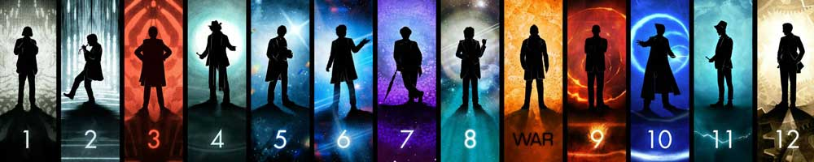

|  |
| Home | The Doctors | The Companions | The Villains | Show History |
Gordon TippleGordon Tipple is a Canadian-based actor who portrayed the Master in the opening sequences of the 1996 Doctor Who TV movie, which was produced in Vancouver. Tipple is credited as "the Old Master" to differentiate him from Eric Roberts, who played the Master for the rest of the film. Tipple's role was originally a bit larger, with him delivering the prologue voiceover before it was decided to have Paul McGann do the introduction from the point of view of the Eighth Doctor. Tipple appears on-screen for only a few moments, and retains a billing on the closing credits despite no longer having any lines. It is not known if he is intended to be playing the same incarnation of the Master as portrayed by Anthony Ainley, or a different Master. If he was a separate incarnation of the Master it would fit more with the novel First Frontier, where the Master regenerates into a new form. His brief appearance notwithstanding, Tipple is the first and, to date, only Canadian actor to play one of the major characters in the Doctor Who franchise. Tipple has a large number of Canadian-based TV credits to his name, including The X-Files, The Dead Zone, The Outer Limits, and the Highlander TV series. |
Brendan Davey Monica DuCong'e Erik Eyler Kayleen Garcia Katie Hyche Ryan Moeller |
Christine O'Brien Alex Recinos Julia Schwartz Madeleine Schwartz Ann Marie Skjold Ashly Wilkins |
[Reference Links] |